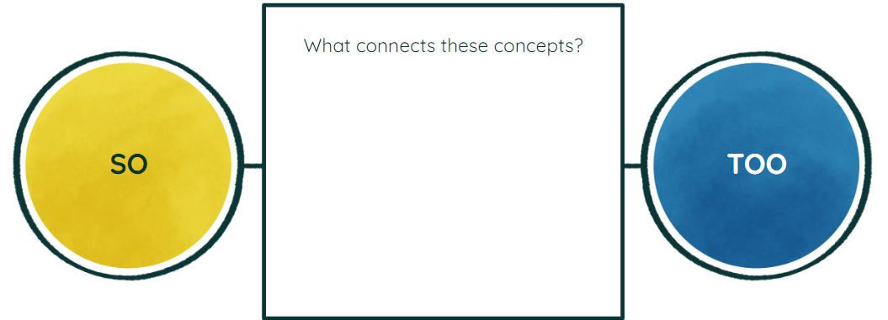

Enough and Not Enough Part II
|
You have already learned how to use the word enough. Let’s continue learning how to use it effectively. Let’s learn through this set of examples:- The game costs $60 See the difference? |
|
“More than enough” More than enough is used in the last sentence if the amount greater than that was said (the price) Your friend texted you and said to you that she will be with 2 of your friends and they love pizza. You buy 2 boxes of pizza, each has 8 slices of pizza. What will you reply? It is more than enough! |
|
Let’s look into more ways to indicate how something is more than enough. Participate in the Discussion Forum: What do you say when something is already more than enough? |


|
Using “too”
Why? Let’s have some samples:
Do you often use “so” or “too”?  “So” and “Too”
Examples: “Too much” + Verb
Examples: |